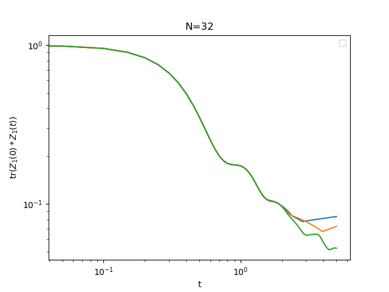

Getting started
PauliStrings.jl is a Julia package for many-body quantum mechanics with Pauli string represented as binary integers. It is particularly adapted for running Lanczos, time evolving noisy systems and simulating spin systems on arbitrary graphs. Paper : https://arxiv.org/abs/2410.09654
Documentation
The documentation is there : https://paulistrings.org
To build the docs :
julia docs/make.jlInstallation
You can install the package using Julia's package manager
using Pkg; Pkg.add("PauliStrings")Or
] add PauliStringsInitializing an operator
Import the library and initialize a operator of 4 qubits
import PauliStrings as ps
H = ps.Operator(4)Add a Pauli string to the operator
H += "XYZ1"
H += "1YZY"julia> H
(1.0 - 0.0im) XYZ1
(1.0 - 0.0im) 1YZYAdd a Pauli string with a coefficient
H += -1.2, "XXXZ" # coefficient can be complexAdd a 2-qubit string coupling qubits i and j with X and Y:
H += 2, "X", i, "Y", j # with a coefficient=2
H += "X", i, "Y", j # with a coefficient=1Add a 1-qubit string:
H += 2, "Z", i # with a coefficient=2
H += "Z", i # with a coefficient=1
H += "S+", iSupported sites operators are X, Y, Z, Sx$=X/2$, Sy$=Y/2$, Sz$=Z/2$, S+$=(X+iY)/2$, S-$=(X-iY)/2$.
Basic Algebra
The Operator type supports the +,-,* operators with other Operators and Numbers:
H3 = H1*H2
H3 = H1+H2
H3 = H1-H2
H3 = H1+2 # adding a scalar is equivalent to adding the unit times the scalar
H = 5*H # multiply operator by a scalarTrace : ps.trace(H)
Frobenius norm : ps.opnorm(H)
Conjugate transpose : ps.dagger(H)
Number of terms: length(H)
Commutator: ps.com(H1, H2). This is much faster than H1*H2-H2*H1
Print and export
print shows a list of terms with coefficients e.g:
julia> println(H)
(10.0 - 0.0im) 1ZZ
(5.0 - 0.0im) 1Z1
(15.0 + 0.0im) XYZ
(5.0 + 0.0im) 1YYExport a list of strings with coefficients:
coefs, strings = ps.op_to_strings(H)Truncate, Cutoff, Trim, Noise
ps.truncate(H,M) removes Pauli strings longer than M (returns a new Operator) ps.cutoff(H,c) removes Pauli strings with coefficient smaller than c in absolute value (returns a new Operator) ps.trim(H,N) keeps the first N trings with higest weight (returns a new Operator) ps.prune(H,alpha) keeps terms with probability 1-exp(-alpha*abs(c)) (returns a new Operator)
ps.add_noise(H,g) adds depolarizing noise that make each strings decay like $e^{gw}$ where $w$ is the length of the string. This is useful when used with trim to keep the number of strings manageable during time evolution.
Time evolution
ps.rk4(H, O, dt; hbar=1, heisenberg=false) performs a step of Runge Kutta and returns the new updated O(t+dt)
H can be an Operator, or a function that takes a time and return an Operator. In case H is a function, a time also needs to be passed to rk4(H, O, dt, t). O is an Observable or a density matrix to time evolve. If evolving an observable in the Heisenberg picture, set heisenberg=true.
An example is in time_evolve_example.jl. The following will time evolve O in the Heisenberg picture. At each step, we add depolarizing noise and trim the operator to keep the number of strings manageable
function evolve(H, O, M, times, noise)
dt = times[2]-times[1]
for t in times
O = ps.rk4(H, O, dt; heisenberg=true, M=M) # perform one step of rk4, keep only M strings
O = ps.add_noise(O, noise*dt) # add depolarizing noise
O = ps.trim(O, M) # keep the M strings with the largest weight
end
return O
endTime evolution of the spin correlation function $\textup{Tr}(Z_1(0)Z_1(t))$ in the chaotic spin chain. Check timeevolveexample.jl to reproduce the plot. 
Lanczos
Compute lanczos coefficients
bs = ps.lanczos(H, O, steps, nterms)H : Hamiltonian
O : starting operator
nterms : maximum number of terms in the operator. Used by trim at every step
Results for X in XX from https://journals.aps.org/prx/pdf/10.1103/PhysRevX.9.041017 :
Circuits
The module Circuits provides an easy way to construct and simulate circuits. Construct a Toffoli gate out elementary gates:
using PauliStrings
using PauliStrings.Circuits
function noisy_toffoli()
c = Circuit(3)
push!(c, "H", 3)
push!(c, "CNOT", 2, 3); push!(c, "Noise")
push!(c, "Tdg", 3)
push!(c, "CNOT", 1, 3); push!(c, "Noise")
push!(c, "T", 3)
push!(c, "CNOT", 2, 3); push!(c, "Noise")
push!(c, "Tdg", 3)
push!(c, "CNOT", 1, 3); push!(c, "Noise")
push!(c, "T", 2)
push!(c, "T", 3)
push!(c, "CNOT", 1, 2); push!(c, "Noise")
push!(c, "H", 3)
push!(c, "T", 1)
push!(c, "Tdg", 2)
push!(c, "CNOT", 1, 2); push!(c, "Noise")
return c
endCompute the expectation value $<110|U|111>$:
c = noisy_toffoli()
expect(c, "111", "110")Contributing, Contact
Contributions are welcome! Feel free to open a pull request if you'd like to contribute code or documentation. For bugs and feature requests, please open an issue. For questions, you can either contact nicolas.loizeau@nbi.ku.dk or start a new discussion in the repository.
Citation
@Article{Loizeau2025,
title={{Quantum many-body simulations with PauliStrings.jl}},
author={Nicolas Loizeau and J. Clayton Peacock and Dries Sels},
journal={SciPost Phys. Codebases},
pages={54},
year={2025},
publisher={SciPost},
doi={10.21468/SciPostPhysCodeb.54},
url={https://scipost.org/10.21468/SciPostPhysCodeb.54},
}
@Article{Loizeau2025,
title={{Codebase release 1.5 for PauliStrings.jl}},
author={Nicolas Loizeau and J. Clayton Peacock and Dries Sels},
journal={SciPost Phys. Codebases},
pages={54-r1.5},
year={2025},
publisher={SciPost},
doi={10.21468/SciPostPhysCodeb.54-r1.5},
url={https://scipost.org/10.21468/SciPostPhysCodeb.54-r1.5},
}